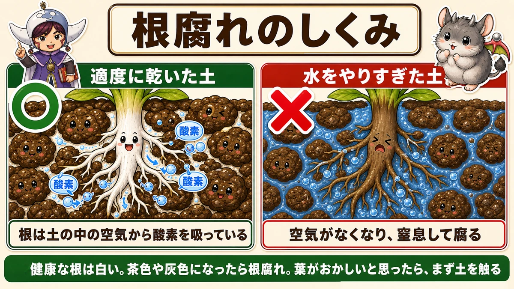
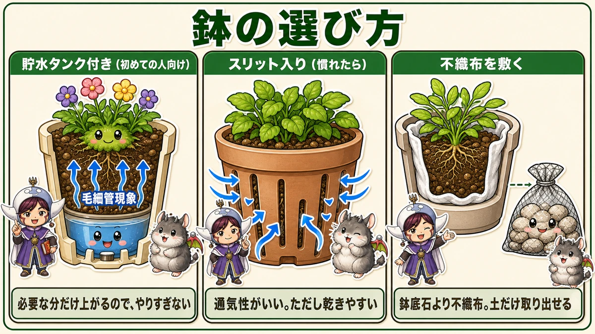
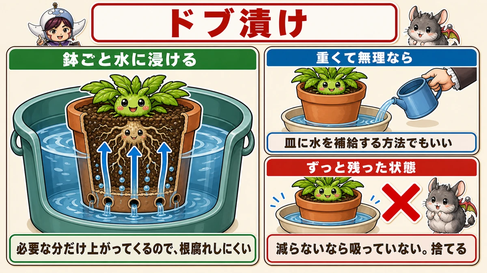
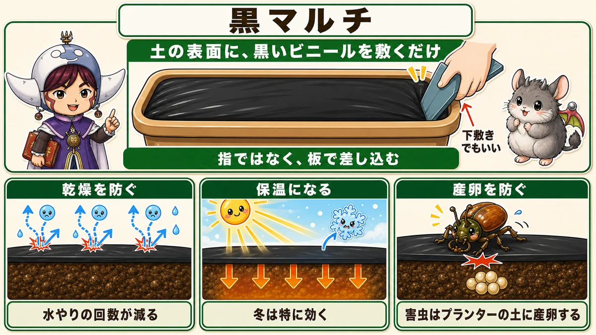
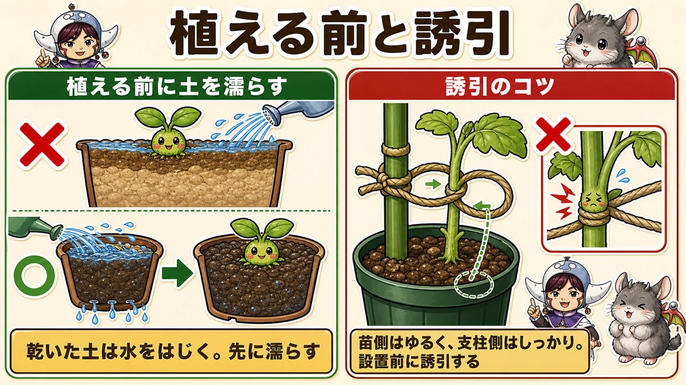
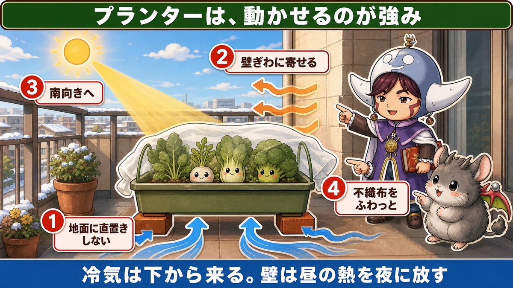
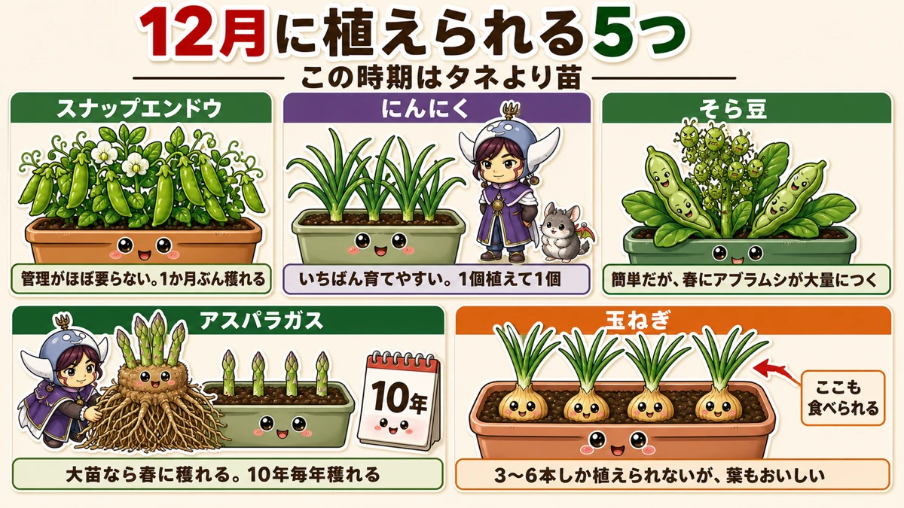
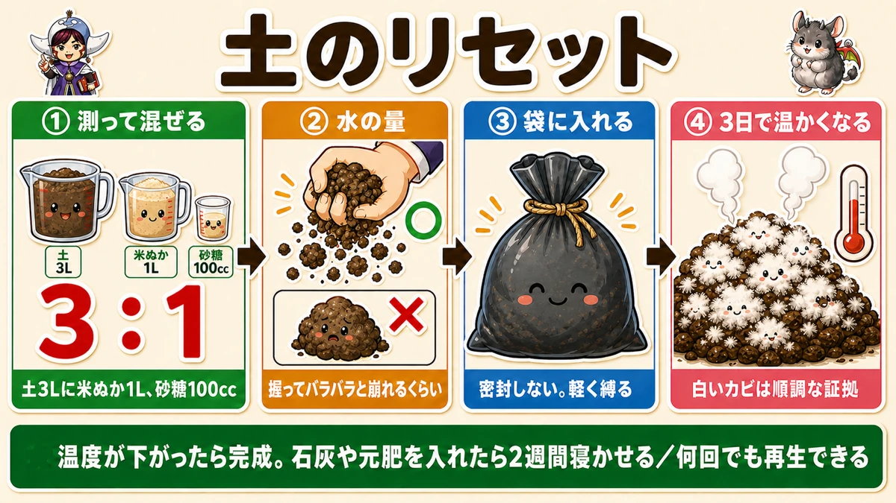

In winter, containers die of too much water 🪴 A pot is not a small garden

🪴 "I've no garden, so I gave up on growing vegetables."
🪴 "Whatever I grow in a pot dies halfway through."
🪴 "Is there anything to grow on a balcony in winter?"
Hello, I'm Eiko. Eight years of growing vegetables organically and without pesticides, and a teaching licence in science.
The headline:
Most container failures are overwatering — and winter is when that risk is highest.
"I don't water that much," you may think. But in winter the temperature is low and the compost doesn't dry. Water on summer habits and it is certainly too much.
And one more thing: a container is not a small version of a garden. It's a different environment. Separate the two in your head and things start going right.
① What's happening is that the roots are drowning

What this diagram says （図解の文字）
- How root rot happens
- ○ "reasonably dry compost" — oxygen, oxygen, oxygen
- "Roots take oxygen from the air in the soil"
- "Overwatered compost" …
Roots take up oxygen from the soil. Less widely known than it should be — roots breathe.
There is air in the gaps between soil particles, and the roots get their oxygen from it.
Water every day and those gaps fill with water and the air is gone. The roots are permanently submerged — effectively drowning — and eventually they suffocate and rot.
How to tell
Healthy roots are white. With root rot they turn brown, then grey, then dissolve.
Once the roots stop working, nothing is taken up — so the leaves discolour and the whole plant dies.
"The leaves are discoloured, it must need water" and watering more is the worst possible response.
When the leaves look wrong, touch the compost first. If it's damp, you're overwatering.
Why winter is dangerous
In summer it's hot and evaporation is fast, so daily watering still lets the compost dry.
Winter is different: low temperatures, short days. Once wet, it stays wet.
Water at a summer pace and the compost never dries out.
In winter, water when it's dry — in fact "dry, then wait another day" is about right.
② It starts with the pot you choose

What this diagram says （図解の文字）
- Choosing a pot
- With a water reservoir (for beginners) — "capillary action", "only what's needed rises, so you can't overdo it"
- Slotted (once you're used to it)
First time: a self-watering pot
You fill a reservoir rather than watering from above, and capillary action draws up only what's needed.
Capillary action is water climbing a narrow gap on its own — dip the corner of a tissue in water and it wets upward. Same thing.
Only what's needed comes up, so you can't overdo it. For a beginner this is the least error-prone option.
Later: a slotted pot
Long slits down the sides. Good airflow, which prevents root rot. It also dries faster, so it needs managing — slightly more advanced.
If compost escapes, use fleece
Slotted pots let compost out of the slits. Most people add drainage stones — but drainage stones are a nuisance to separate from the compost when you reuse it.
Better: line the pot with horticultural fleece and fill inside that. Nothing escapes, and later you can lift the compost out on its own.
Fit the fleece snugly to the inside first, then add compost gradually and level it.
If you must use drainage stones, put them in a net so you can lift them out in one go.
③ Water it from below

What this diagram says （図解の文字）
- Dunking — "stand the whole pot in water"
- "Only what's needed rises, so root rot is unlikely"
- "If it's too heavy, top up a saucer instead"
The most reliable method: stand the whole pot in water. A bucket or a storage box, sink the pot, lift it out after a while.
Why it's better
Watering from above, you never know how much went in. Too much or too little.
Drawn from below, capillary action brings up only what's needed — and no more. No water sits around the roots, so root rot is unlikely.
If it's too heavy to lift
A large container full of wet compost is genuinely heavy. Don't strain yourself.
- Use a self-watering pot
- Or stand it in a deep saucer and top that up
But never leave water standing in the saucer indefinitely. If the saucer isn't emptying, the plant isn't drinking. Tip it out.
④ Put black mulch on the compost

What this diagram says （図解の文字）
- Black mulch — "just lay black plastic on the surface"
- "Tuck it in with a flat board, not your fingers"
- "Stops drying → fewer waterings"
Familiar from open ground, and it's in containers that it really earns its place. A sheet of black plastic on the surface gives you:
- Less drying — fewer waterings
- Warmth — especially in winter
- No egg-laying by pests
The third matters more than you'd think. Chafers and others lay in container compost, and the damage is worse than in open ground because there's less compost and the roots are concentrated in it. Grubs eating those roots weaken the plant very quickly.
Covered compost can't be laid in. That alone prevents it.
Tucking it in neatly
Use a flat piece of plastic to push the mulch down at the rim. Trying it with your fingers is frustrating; a board works.
When you cut the planting hole, do it gently — forcing it stretches the sheet you just laid.
⑤ Wet the compost before you plant

What this diagram says （図解の文字）
- Before planting, and tying in
- "Wet the compost before planting" — ✗ ／ ○ — "dry compost repels water. Wet it first"
- "Tying in: loose at the plant…"
Small, and it changes how well a plant establishes. Fill the pot, then water until it runs out of the bottom — before you plant.
Because roots can't extend through dry compost.
Watering after planting often doesn't reach: dry compost repels water, so the surface wets and the middle stays dry, and roots can't grow into it.
Wet it thoroughly first. It's a question of order.
Balconies are windy — tie in before you position it
- Push the cane in outside the plant's root ball, so you don't damage roots
- Loose at the plant, firm at the cane
- Don't tie tight — as it grows, the loop strangles the stem
And the important one: tie it in before you put the pot in place.
A balcony is windier than ground level — wind funnels between buildings and the plants are shaken far more than you expect. "I'll do it later" means finding it flat the next morning.
⑥ Where you put it in winter decides what survives

What this diagram says （図解の文字）
- Being movable is a container's advantage
- 1 "don't stand it directly on the ground" 2 "move it against the wall"
- 3 "face it south" 4 "fleece"
① Don't stand it on the ground
Cold comes from below. Standing on concrete or tiles, it's chilled from the base continuously — and with little compost, the middle cools quickly.
Bricks, a slatted board, a wooden stand — anything that lifts it a few centimetres cuts that considerably.
② Move it against the building
A wall stores heat during the day and releases it slowly at night, so beside a wall is warmer than out in the open.
Against the building side rather than the balcony railing — that alone softens the night-time cold.
③ Move it south
The sun is lower in winter. Places that were shaded in summer may now get sun; places in full sun all summer may now be in the building's shadow.
Re-check how the light falls when winter arrives. Even half a day of sun changes the growth entirely.
④ Lay fleece over loosely
Same as in open ground: loosely, not taut. Even putting it on at night and removing it in the morning helps.
Things you can still plant late

What this diagram says （図解の文字）
- Five things you can plant in December
- "At this point, plants rather than seed"
- Sugar snap peas — "almost no management. About a month's picking"
- garlic …
At this stage, use plants rather than seed — it's too cold for reliable germination.
- Sugar snap peas — my first recommendation. Almost no management after planting, and a 30 cm (12 in) pot gives about a month's picking. They also lose freshness fast in the shops, so picking and eating them immediately is a real container advantage
- Garlic — the easiest of the lot; plant it and largely ignore it. One clove gives one bulb, so it's not for volume — but if you want one guaranteed success, this is it
- Broad beans — easy, with one catch: heavy aphids in spring. Get past that and you'll pick 10–20 pods
- Asparagus — an interesting choice. Buy a three-year-old crown; from seed it takes three years, but a crown planted now crops in spring. Only about three spears from a 30 cm pot — but it crops every year for a decade, and increases
- Onions — honestly the hardest in a pot; a 40 cm container takes only three to six. One thing worth knowing: the green tops are edible, and good. Growing a few in a pot is how you notice that
Note that garlic and onions are really autumn crops; planted late they come out smaller.
Use the quiet season to rebuild the compost

What this diagram says （図解の文字）
- Resetting the compost
- ① "measure and mix" — compost 3 L ／ rice bran 1 L ／ sugar 100 ml — 3 : 1
- ② "how much water" ○ ／ ✗ — "squeeze…"
There's time in winter. Rebuild your used compost — you don't have to throw it away, and it can be regenerated indefinitely.
- Roughly measure what you have (say 3 L)
- 1 L of rice bran per 3 L of compost (3 : 1)
- About 100 ml of sugar to help the fermentation — any kind
- Mix well and add water
To sum up
- ✅ Most container failures are overwatering
- ✅ Roots breathe; waterlogged compost drowns them
- ✅ Discoloured leaves? Touch the compost before watering
- ✅ In winter, "dry, then wait another day"
- ✅ A self-watering pot for beginners; slotted once you're used to it
- ✅ Line with fleece instead of drainage stones
- ✅ Water from below — stand the pot in water
- ✅ Never leave water standing in the saucer
- ✅ Black mulch: less drying, more warmth, no egg-laying
- ✅ Wet the compost before planting; dry compost repels water
- ✅ Tie in before positioning — balconies are windy
- ✅ Lift it off the ground, move it to the wall and into the sun, fleece it loosely
- ✅ Used compost can be rebuilt with rice bran
You don't have to do all of it. Tonight, put a finger into the compost of the pot you were about to water. If it's damp, that's your answer 🪴
Thank you for reading!